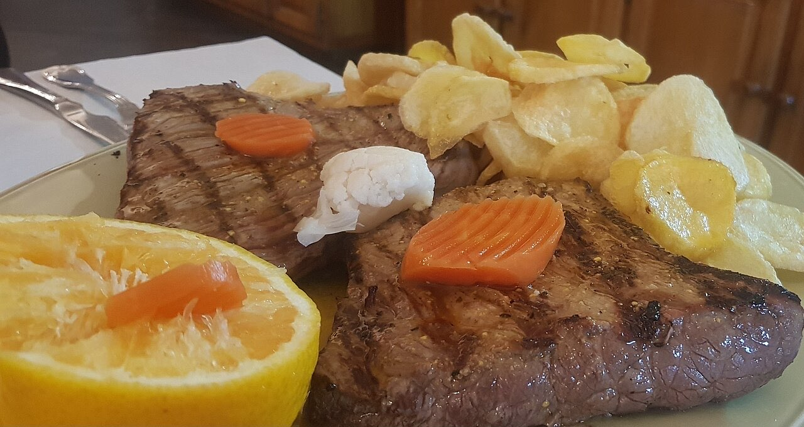
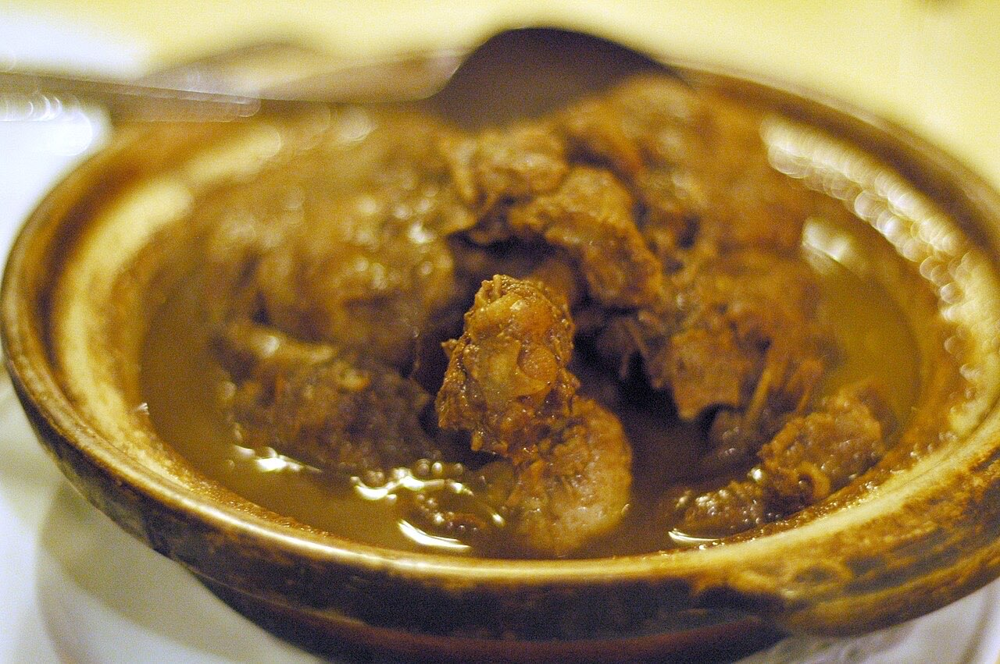

Fotografias ilustrativas — no site final usamos as vossas.
Cozinha tradicional portuguesa · Lordelo
Cozinha portuguesa com calma em Lordelo
Uma refeição portuguesa sem pressa.
Em Lordelo, Guimarães.
Ligue ou escreva por WhatsApp para reservar.
O Retiro das Oliveiras serve cozinha tradicional portuguesa em Lordelo, na Rua de Enxudres. Um sítio para almoçar com calma, em família ou com amigos.


Fotografias ilustrativas — no site final usamos as vossas.
Pedido de reserva
Escolha o dia e a hora — o pedido chega por WhatsApp e confirmamos logo.
↑ Assim chegaria a mensagem ao vosso WhatsApp. (Nesta demonstração nada é enviado.)
Onde estamos
Proposta para Retiro das Oliveiras
Esta página foi feita de propósito para Retiro das Oliveiras por João Machado, programador web aqui de Guimarães. Inclui:
Eu trato do alojamento e da manutenção. Sem compromisso.